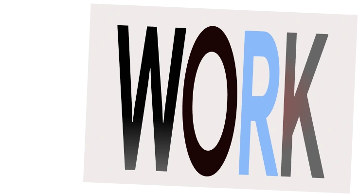
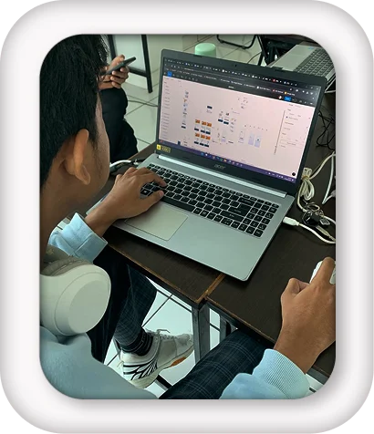
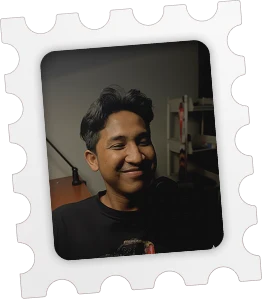

Visual systems that feel specific to the story, not borrowed from a component gallery.
- Interface direction
- Responsive layouts
- Social graphics
- Illustration

Open work experience Open education and certifications
Open selected projects
About me
Based in Bogor, I blend design, code, and storytelling into clear digital experiences.
I switch between visual, technical, and editorial thinking without losing the thread between them. Open a folder to see what that means in practice.
Visual systems that feel specific to the story, not borrowed from a component gallery.
Frontend work that protects the visual idea while staying semantic, fast, and usable.
Content systems that give teams a repeatable rhythm without flattening their voice.
My path is not a straight developer timeline. Teaching sharpened how I explain. Editorial work sharpened how I frame. Technology study gives those ideas structure.
Request my full resumeSekolah Prestasi Global, Depok
Building content strategy and managing social communication to strengthen the school's brand with a clearer, more consistent publishing rhythm.
MileniaNews, South Jakarta
Edited news content and expanded into social media design, content planning, and a short role hosting a horror-story podcast.
SMK YASTRIF 2
Taught digital simulation and automotive technical drawing, prepared lesson plans, and evaluated student progress.
Universitas Bina Sarana Informatika
Focused on software development, program analysis, and web development, supported by practical networking and programming credentials.
Selected work and practice across web, editorial content, social design, and illustration. Each case file starts with context instead of decoration.
Tell me what you are making, where it is stuck, and what a good outcome looks like.